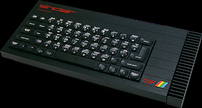

Last October, YS flew Max Phillips to Madrid to look at the new 128K Spectrum. Last week, we paid his tube fare to Bethnal Green (well, someone's got to live there!) to try out the new UK version.
It's here, it's official, it's a 128K Spectrum. Indeed some of you may already own one! It is different from its Spanish ancestor but not a lot. In case you've missed the stories while Sinclair took its time bringing the machine to us, the 128 is two computers in one - a 48K Spectrum+ and, in 128K mode, a greatly enhanced Spectrum with some new hardware and software that s vaguely compatible with the old machines.
People are already moping about the 128. It may not be as radical as the ZX80 was but it does have some worthwhile new features. Sound has come to Sinclair at last - using the sound chip through the TV is going to change games as we know them. You've got three voices, alterable waveforms and various special effects. It's pretty good from Basic but machine coders with interrupt-driven sound routines are going to blow your ears!
The monitor socket (both RGB and Composite video) is simply a sight for sore eyes. BRIGHT colours are no problem with RGB because there's an extra Intensity line - but you'll need the right sort of RGB monitor. The Midi musical instrument interface is gaining ground with pro musicians everywhere - who'll be the first to use a Speccy on-stage? And the RS232 is handy if Sinclair had taken the trouble to document it.
The extra 64K is used as a RAM disk for Basic and is an incredible time-saver. Machine code programs can of course. use the whole of Ram giving around 104K to play with - space for some mind-blowing games and some really useful applications. The 'missing' 20K of RAM is apparently used to hold a copy of the ROM and is write protected so that you can't POKE into it. However, if you can unprotect it from machine code, then you'll have 120K. You could even do tricks like making alterations to ZX Basic.
The 128K mode software is, however, a bit of a dead fish. Pretty pop-up menus tape volume testers and so on might be fun for a day or two. But remember this is the first time Sinclair has had the chance to make all those improvements to ZX Basic we've been asking for in the last four years. All the 128K mode applications could be written in a week flat for the old Speccy.
Fortunately, the situation with other software is much better. Sinclair's had software houses labouring away on 128K masterpieces for months and some of it looks to be really impressive... we're in for some fun! The package comes with two free new Ocean games (but no Horizons or Intro tape) and a huge poster listing 128 add-one and software. Shame we didn't get the Ocean games though... maybe one of them's Streethawk!
Scanning the poster for the 128K games is like reading the charts for the last six months - Winter Games, Three Weeks In Paradise, Robin Of The Wood, Rasputin, Rocky Horror Show, Return To Eden, Never Ending Story, Sweevo's Whirled (note the new title for the current Castle Rathbone fave rave!), Yie Ar Kung Fu, Fairlight 2: The Trail Of Darkness ... err hang on a sec, we haven't seen a 48K version of that yet. Most of these are just bigger versions of existing games so we'll have to wait for 128 originals but I don't think it'll be too long.
Hardware's less of a rosy picture - it all works in 48K mode but how many of your treasured add-one (your Microdrive, ZX Printer, Kempston and so on) are going to work in 128K mode? Then again, asking for miracles is always an easy thing to do...
And I could moan for days about the documentation. It's the old Spectrum+ User Guide and a 14-page booklet detailing most of the 128's new features. Oh well, no doubt someone will make a fortune by writing a manual for the machine.
So, who's gonna buy one? Well if you don t own a Spectrum yet then get one of these. If you're already one of the family then wait until your or 48K keels over and dies of old age. Then get one of these. The price is crucial... at around £120 it's a goer but if Sinclair does the dastardly and comes in at £160 then there will be fewer takers.
And now we can start dreaming about the next Speccy!